Recommendation for Fashion Compatibility
Created by Jiali Duan on March.25th, 2019 2nd year PhD at USC, supervised by C.-C. Jay Kuo
Outline for seminar
- Learning Human-robot interaction
- Introduction of Physical inference
- Learning Robot-world interaction
Learning Human-Robot Interaction
- Infer Human Intent
- Image recognition/Natural Language processing
- Build computational models of human
- Interaction Aware Planning and Control
- Assistive human behavior
- Adversarial human behavior
- How robots influence human behavior
- Evolvement of robot/human behvior
- Societal Implications
- Autonomous Driving
- Service Robots
Case 1:
Case 2:
Adversarial Human Behavior
Motivation
- Works exist for cooperative human
- In reality, people don't always act rationally
- Explore the idea of adversarial learning
Task Description
Goal: Planar grasping with robotic arm
- Input: RGB visual input
- Output: Grasping action
Pipeline Overview
- Object Detection
- Input: Image observation from sensor
- Output: Grasping position triplet <$x$,$y$,$\theta$>
- Inverse Kinematic Control
- Input: Destination location and angle
- Output: Control params for controllers
- Human Interaction
- If grasping fails: Reset environment
- If grasping succeeds: Apply human perturbation
- Training/Inference
- Input: reward
- Apply: grasping policy update
Problem Formulation
Illustration of Human-robot Interaction
- $s \in S$: state of the world
- Perform grasping based on $s$
- State transition: $\mathcal{T}:S \times A^R \rightarrow \Pi(S^{+})$
- $\pi^H:(s^{+},a^H)$: human action leads to $s^{++}$
- $r:(s, a^R, s^+, a^H, s^{++}) \mapsto r$: Reward
Human Adversary
Adversarial setting: the robot attempts to maximize $r$, while the human wishes to minimize it
Reward design:
$r = R^{R}(s, a^R, s^+) - \alpha R^{H}(s^+, a^H, s^{++})$
- $R^{R}(s, a^R, s^+)$: Reward received in absence of adversary
- $R^{H}(s^+, a^H, s^{++})$: Penalty induced by human action
Training Objective
Goal: Develop a policy $\pi^R:s \mapsto a_t^R$ that maximizes:
$\pi_*^R = argmax_{\pi^R}~{E} \left[r(s, a^R, a^H) \vert \pi^H \right]$
- $\pi^H$: Human adversarial action
- $\pi^R$: Robot action
Algorithm Pipeline
Goal: Develop a policy $\pi^R:s \mapsto a_t^R$ that maximizes:
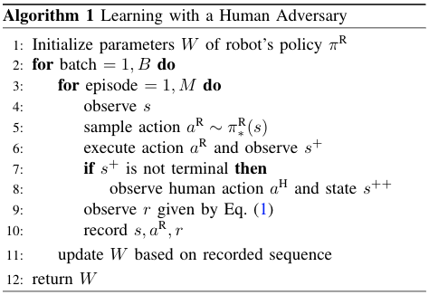
Experiment Settings
Conduct user study for human-in-the-loop training
- User study of 25 participants
- The goal was to maximize robot's failures
- Short tutorial with 10 trials
- Each user trains one object for 50 rounds
- Manipulated Variables
- Robot's learning framework
- Object that user interacts with
- Comparison
- Self-supervised learning
- Joint train with learned adversary
- Joint train with human adversary
Hypothesis
- H1: Robot trained with the human adversary will perform better than the robot trained in a self-supervised manner
- H2: Robot trained with the human adversary will perform better than the robot trained with a simulated adversary
Environment Setup
- Objects
- Human Interface 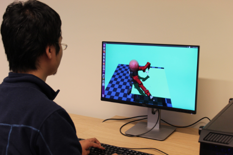
Result Analysis
- Success rates w/wo random disturbances for 5 users 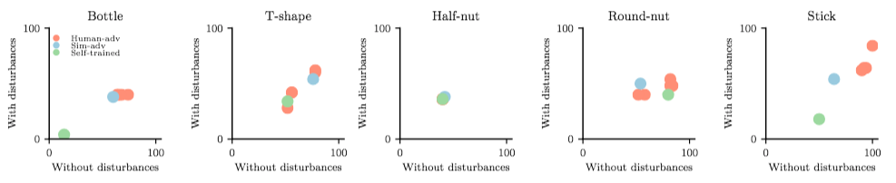
- Success rates for all five participants 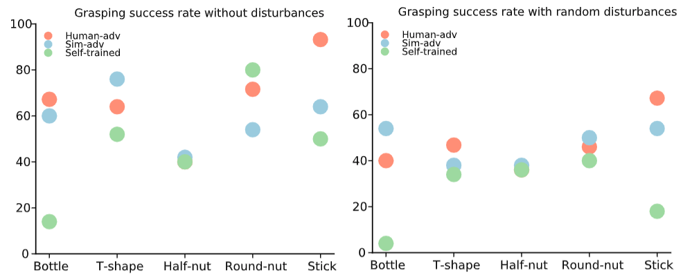
Result Analysis
- Grasp success rate before/after random disturbance 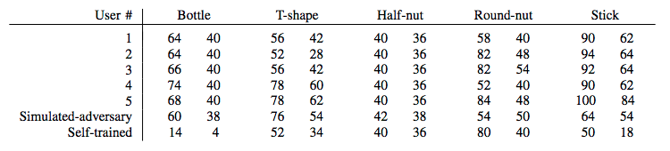
- Actions applied by human adversaries over time (green: robot win/red: robot lose) 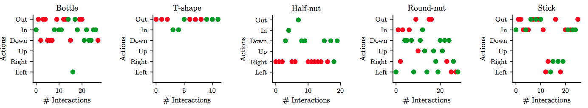
Result Analysis
- Objective Metrics
- ANOVA (object and framework as indep variables): showed a statistically significant interaction effect
- $F(16,38) = 3.07, p = 0.002, \text{Wilks'~} \Lambda=0.19$
- Post-hoc Tukey tests with Bonferroni correction showed human adversary $>$ self-supervised
- w/wo random disturbances ($p=0.001$)
Subjective Metrics
Participants generally agreed that:
- Robot learned throughout the study
- And its performance improved
- A Cronbach's $\alpha=0.86$ showed good internal consistency
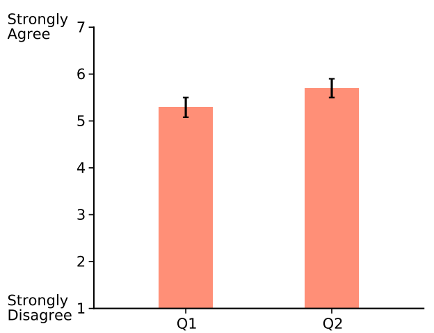
Demonstration
Before human adversarial training
Demonstration
After human adversarial training
Short Summary
Robot Learning via Human Adversarial Games (Duan et al., IROS Under Rewiew)
- Train robot grasping policy with adversarial learning
- First paper to explore and compare simulated adversary vs human adversary
- Build an interactive physical interaction engine
- One-step reinforcement learning framework
- Verified two hypothesis with 25 users
Learning Robot-World Interaction
- Representation Learning
- How to represent object-centric features?
- How to extract relation-centric features?
- World Modelling
- How to leverage world model?
- Interaction Modelling
- How to model object-object interaction?
- How to predict long-term effect?
Physical Inference: Model interaction and the world then use the world model for inference
An Example
A ball slides into a cube from an external force
What's physical inference
Physical prediction about the future from observations of the past
- Future prediction: interaction, trajectory
- Past observation: visual sequences
Extend naturally to control, planning and inference
One typical pipeline
Imagine that a robot needs to push a cup of coffee across the table to give it to a human.
- Segment an observed point cloud into objects
- Fit a 3D model to each object segment
- Execute physics simulator using physical estimates
- Choose action to move cup to desired location
Problem of above pipeline
- Cannot generalize to unseen objects (due to step 2)
- Can break down when one stage has large error
- Compounding error from previous stages
- Require accurate physical estimates (due to step 3)
A small error in the estimated liquid content in the cup or the friction coefficient might cause the robot to push it too high above its center of mass, causing the contents to spill.
Motivation
Is it possible to replace the hand-engineered robotic manipulation pipeline with a single general-purpose, learned model that connects low-level perception with physical prediction?
Benefits
- No accurate estimate of physical parameters
- Can generalize to unseen objects
- Foundation for model-based control and learning
Summary (Physical Inference)
- Mimic human ability in reasoning physical interaction
- Lay a foundation for down-stream tasks (reinforcement learning)
Object/Interaction modelling Framework
Motivation
- Learn object features
- Learn object relations
- Learn system features
Definition
Graph representation: $G = \langle O,R \rangle$, where the nodes, $O$, correspond to the objects, and the edges, $R$, to the relations.
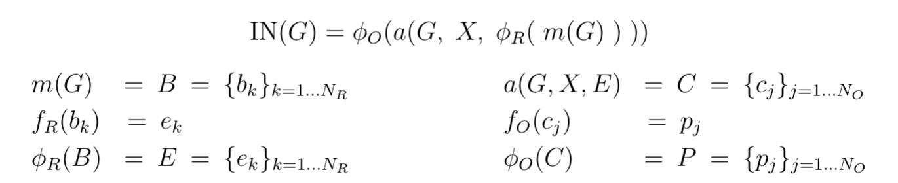
- $b_k = \langle o_i, o_j, r_k \rangle \in B$, one per relation, which correspond to each interaction's receiver, sender, and relation attributes.
- The relational model, $\phi_R$, predicts the effect of each interaction, $e_k \in E$.
- The aggregation function, $a$, collects all effects, $e_k \in E$, that apply to each receiver object, merges them, and combines them with $O$ and $X$ to form a set of object model inputs, $c_j \in C$, one per object.
- The object model, $\phi_O$, predicts how the interactions and dynamics influence the objects by applying $f_O$ to each $c_j$, and returning the results, $p_j \in P$.
Implementation
- $O$ is represented as a $D_S \times N_O$ matrix
- The relations are a triplet, $R=\langle R_r, R_s,R_a \rangle$, where $R_r$ and $R_s$ are $N_O \times N_R$ binary matrices. $R_a$ is a $D_R \times N_R$ matrix.
- The $X$ is a $D_X \times N_O$ matrix
- The marshalling function, $m$, computes the matrix products, $O R_r$ and $O R_s$, and concatenates them with $R_a$: $ m(G) \; = \; [ O R_r ; O R_s; R_a] \; = \; B$ . The resulting $B$ is a $(2 D_S + D_R) \times N_R$ matrix
- The $B$ is input to $\phi_R$, which applies $f_R$, an MLP, to each column. The output of $f_R$ is a $D_E$-length vector, $e_k$, a distributed representation of the effects. The $\phi_R$ concatenates the $N_R$ effects to form the $D_E \times N_R$ effect matrix, $E$.
- The $G$, $X$, and $E$ are input to $a$, which computes the $D_E \times N_O$ matrix product, $\bar{E} = E R_r^T$. The $\bar{E}$ is concatenated with $O$ and $X$: $a(G, X, E) \; = \; [ O ; X; \bar{E}] \; = \; C$.
- The $C$ is input to $\phi_O$, which applies $f_O$, another MLP, to each of the $N_O$ columns.
Results
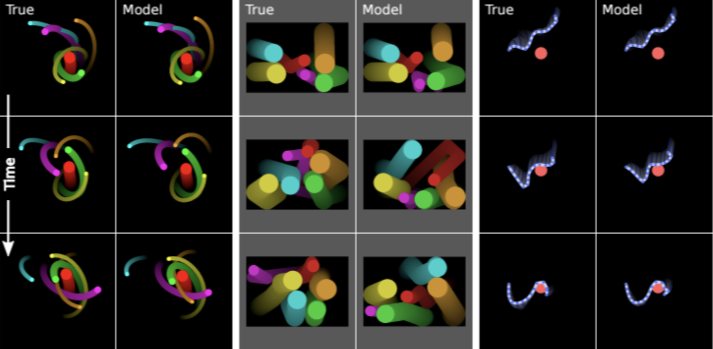
Courtesy to Battaglia, P., Pascanu, R., Lai, M., & Rezende, D. J.et.al 2016
Learning relations in a Graph
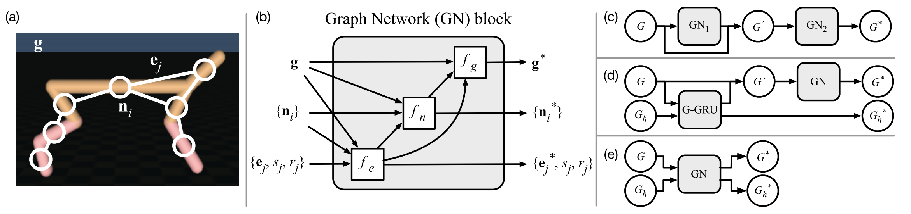
Pipeline Overview
- Build graph of an object using kinematic tree
- Model interaction effect with message passing propagation
- Update node info with node+adjacent edge+graph feature
- Update edge info with end-node+edge+graph feature
- Update graph info with node+edge+graph feature
Courtesy to Sanchez-Gonzalez, A., Heess, N., Springenberg, J. T., Merel, J., Riedmiller, M., Hadsell, R., & Battaglia,P.et.al 2018
Learning Motion Dynamics
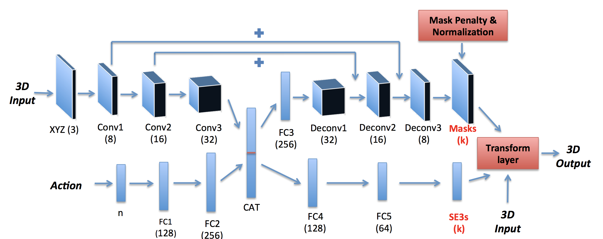
Pipeline Overview
- Learn $\{SO_3,t\} \in SE3$ for rigid transformation
- Learn mask for component-wise segmentation
Courtesy to Byravan, Arunkumar, and Dieter F.et.al 2017
What can we do with the model?
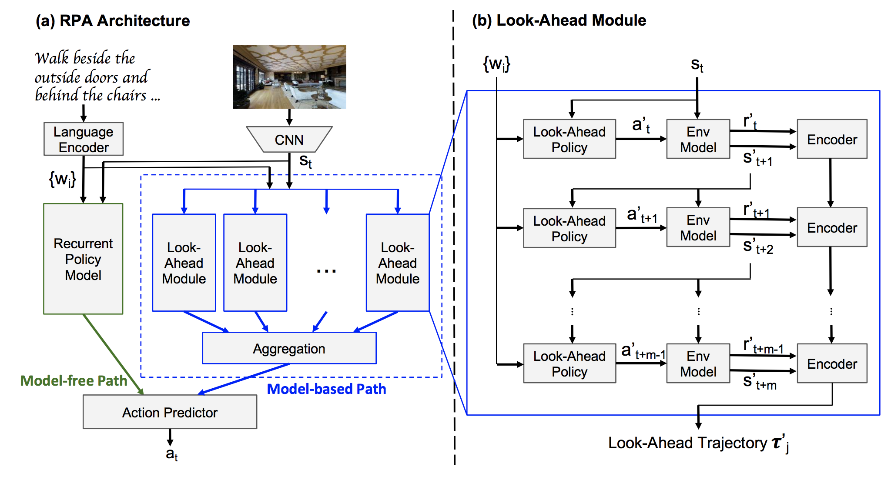
Pipeline Overview
- Visual 3D indoor navigation
- Generate trajectories based on model prediction
- Complement model-free method
Courtesy toWang, X., Xiong, W., Wang, H., & Yang Wang, W. 2018.
THE END
- Explore human prior for human-robot interaction
- Model robot-world interaction is challenging
 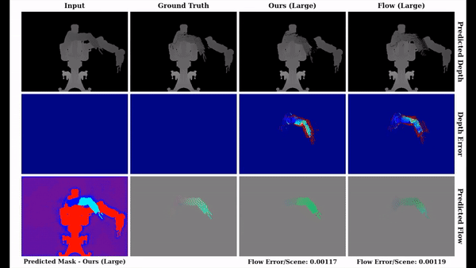
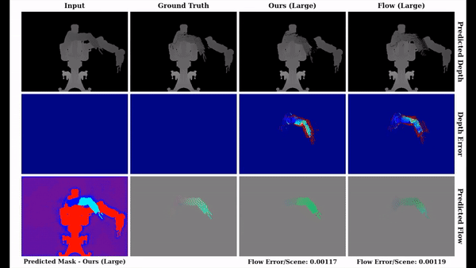